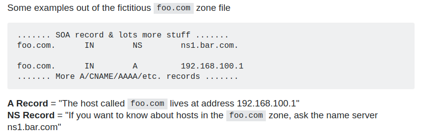
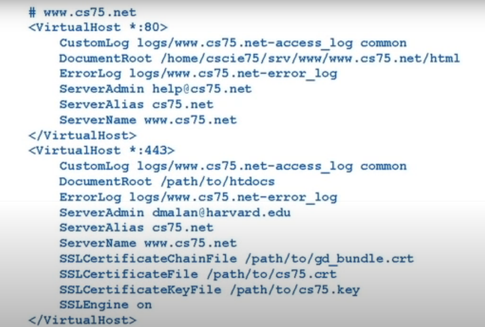
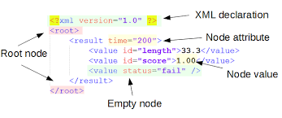
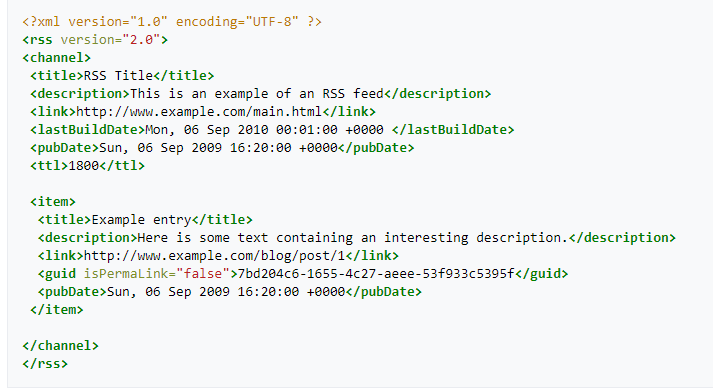

Harvard CS75 Web Development
- Chapter 0: HTTP
- Chapter 1: PHP
- Chapter 2: PHP Continued
- Chapter 3: MVC XML
- Chapter 4: SQL
- Chapter 5: SQL Continued
- Chapter 6: Javascript
- Chapter 7: AJAX
- Chapter 8: Security
- Chapter 9: Scalability
Lecture 0 HTTP
What happens after you pressing Enter?
The URL address will be translate to an IP address. 我们现在所用的IP address是ipv4,它由四组0-255的数字组成，总共32bits，可以有40亿总可能，我们现在每个人都有很多设备，ipv4的组合已经快不够用了。
所以新的ipv6要替代原来的ip address，它由8组4位的16进制组成，总共有128bits
怎么样将hostname网址转换成IP address呢？我们需要用到DNS（Domain name server）,他储存有ip address到hostname的一个mapping table，如果你访问的网址不在这个DNS里，他就会不断的访问上级服务器，直到访问到root server，root server知道谁有可能知道这个ip address，在不断的访问到下级服务器/DNS，直到找到并把hostname转换成ip address
互联网就像一个邮件系统，我们现在知道邮件该送给谁，我们知道自己的ip address(return address). 我们就可以把信息送给我们想送的网站，比如google.com，他收到信后，会拆开看我们相访问哪个网址，比如index.html,然后把我们想要的内容装进信封，颠倒送件人和收件人，然后送回来，我们拆开信封看到html信息，浏览器就会显示这些信息
Private Ip address
对于一个家庭来说，所有的设备共享一个公共ip，但是每个设备都会有自己的private ip，192.168.x.y. 或者172.16.x.y. 当你需要很多设备时，比如在大型公司，你可以使用10.x.y.z
TCP/IP
IP用来确认谁要向谁传送信息，TCP就是传送协议
Port Number
信息的传送有很多种，不光是HTTP，还有邮件，短信等等，我们使用不同的port number来让服务器知道进来的request是哪种请求，比如HTTP: TCP 80，我们让服务器听取port 80的网页请求，还可以SMTP: TCP 25让服务器听取port 25 的邮件请求， HTTPS： TCP 443, 加密的网页请求。
现在的浏览器会自动在网址后面加上port number
Getting your own domain name
我们的设备虽然可以联网，但是他只有一个公共ip，如果我们想host我们自己的网站，我们就需要有一个域名 GoDaddy, NameCheap
Hosting your own website
当我们有了域名之后，我们还需要一个web server用来存放我们的网站相关文件，HTML， CSS， JAVASCRIPT等等，这需要我们再找一个提供DNS服务的公司（dreamhost.com），向他们租用一些online storeage，他们也会提供两个ip addresses（还有一个是备用的）。并且与我们的域名关联
DNS
例子：如果你的网站是一个邮件服务网站，比如Google email。我们的email虽然可以是yuan@unicard.com，但是其实我们使用的是Google的邮件服务，DNS识别出以unicard结尾的邮件地址是属于Google的一个服务，并把他发送到Google的服务器。
NS Name Server
一个NS record的作用是告诉大家哪个name server知道关于我们域名的一些信息
NS stands for 'name server' and this record indicates which DNS server is authoritative for that domain (which server contains the actual DNS records). A domain will often have multiple NS records which can indicate primary and backup name servers for that domain
A
A record的作用是把ip address和域名相连(Domain name to ip address)
CNAME Canonical name
与A record不同的是CNAME是把域名和域名相连(Domain name to domain name)，因为比如我们相用Google的邮件服务，所以我们想把yuan@unicard.com，关联到yuan@google.com,然后Google用他们呢的DNS server去把他转换成ip address，我们就不用担心Google改变他的ip address了。 再比如说，如果Dell公司的客户服务是外包出去的，那么我们访问Dell的网站，在通过Dell官网进入到他们的客户服务网站，我们就会发现我们从Dell.com 到了customerService.com，这样可能不太好，Dell想让他的网站看起来是一个整体，所以就可以用CNAME让customerService.com的名字隐藏起来，只显示成support.dell.com
MX Mail Exchange
MX record把负责处理请求的server和他们的ip address相连，这样就可以知道进来的email请求该由哪个server负责
What happens when you reach the target website?
Web host
Web host companies host multiple websites with one ip address, they share one ip address. Server response with different content based on the headers in the request
If the hosting server is using Php v4.3, you have to use the same. If the hosting server is down, all websites related to this server is also down.
VPS(Virtual Private Server)
VMware, Parallels, Virtual Box
Install multiple instances of Windows or Linux or MacOS on the server, and you can control the software and tools on that VPS
SSH/SFTP
SSH: Connecting to a remote server and execute commands on it. SFTP: Transfer files to a remote server.
telnet www.google.com 80
GET / HTTP/1.1
(press enter twice)
If your webiste is hosted by a server that are shared with other website, you have to send a get request with a host header specify your domain name. Otherwise the server don't know what content to return.
nslookup google.com
will list ip address for that host
sudo vi /etc/hosts
this is a local ip address <-> domain name mapping table, browser will check this file first before sending any request
Lecture 1 PHP
Apache
Configuration file for Apache web server: httpd.conf, apache.conf, apache2.conf
1. listen to port 80 of any ip addresses of incoming requests
2. ServerName and ServerAlias: the destination of the incoming requests, both will need an A record in DNS to work (or CNAME)
3. CustomLog, ErrorLog: Specify where to save the log files
4. DocumentRoot: Root path of your website
5. port 443 uses SSL(Secure socket layer), needs a certificate to be installed on the server.
SSL: there are two keys, public key and private key, when a user visits our website, the website sends the public key to the user's machine, user uses it to encrypt the message. Then when our website receives the message from the user, we use the private to decrypt it to get the original message. But this is not enough, we need to ask some Certificate Authorization(CA) for a certificate. This is because user doesn't trust our website. but because our website is trusted by a CA, so the user can trust our website. Certificate needs to be digitally signed.
6. SSLCertificateKeyFile: the private key on the server
7. SSLCertificateFile: the certificate
mod_rewrite
RewriteEngine On
RewriteCond %{HTTP_HOST} !^www\.cs75\.net [NC]
RewriteRule (.*) https://www.cs75.net/$1 [R=301, L]
1. HTTP_HOST is an environment variable, it is the host name. In English, the first line is a condition, it is saying if the host name is not starting with www.cs75.net(Regex), do the following line, [NC], no case, case insensetive
2. (.*) one or more any characters, it remembers what user was typing, redirect user to the correct URL, 301 move permanently, the browser saves the result and next time will redirect you automatically. whereas 302 is move temporarily.
The reason to do this is to make sure the URL in user's browser is the website URL. Because there are multiple ways to visit the website and not typing the website URl. We could use ip address, we could use 'udo vi /etc/hosts'(see end of lecture 0). So this will make sure that the URL will always be www.cs75.net no matter what user originally typed.
XAMPP
Linux, Apache, MySQL, PHP, Perl
We can set up our dynamic website without using remote virtual server, people from outside world cannot visit it. But it is good for development purposes
GET/POST
GET: will change the state of the url, add parameters behind the quesiont mark '?', parameters are separated by &, everything will be shown in URL, not good to send sensitive or huge information
POST: can upload files(images), it is not in URL, can send sensitive information. Post request cannot be copied. One of the downsides of POST is that when user click reload or backbutton, browser will try to submit the form again, you may end up buying things twice. One of the solutions would be, whenever user submitted a form, immediately redirect user to another website page with only GET request, so they cannot revisit the POST request page anymore.
PHP
Very well documented. Interpreted(alternative to compiled) language, you don't need to compile it first then to run it, you can just give your code to a interpreter and it will run. Downside is performance. Once a C++ language be compiled, the complied code can be run by CPU superfast. whereas PHP needs to be interpreted everytime.
suPHP
Web servers usually have root user(administrator) and other users. If you are user A, and you want the web server to be able to use your PHP code. You have to set them to be readable. Then another user B would be able to see your PHP code. Use suPHP could solve this issue. It makes sure that web server can only execute A's code when A's logged in. And B cannot see it when B's logged in. And A can only delete A's file, so no one else could modify or break A's code. If A's website's users upload files or images, they are stored in the server where only A can see.
Variables
Data Types(loose in PHP), PHP functions will return different data types based on situations
Superglobals
- $_COOKIE, key values from browser
- $_ENV, lower details of user's machine
- $_FILES
- $_GET, hash table
- $_POST, array
- $_REQUEST, details from requests
- $_SERVER, user agent, browser and OS
- $_SESSION, states, save values
Command line
mkdir, make directory
cd, change directory
cat/more, show content of a file
ls, list content of a directory
. current folder
.. parent folder
ls -al, list permission settings for all files in current directory
chmod, change mode of a file or directory: e.g. chmod a+r filename: give read access to a file called filename
permission settings looks like this: -rw-rw-r--, the first - means it is a file or it can be 'd' for directory, it can then be split into three groups, they are the owner, the group and the world.
Use $_GET['username'] to get the variable values user send by GET request.
Use htmlspecialchars to escape all html tags to sanity check user inputs
Lecture 2 PHP Continued
PHP is an interpreted language, it can be run at anywhere no matter what the PC is like. Compiled language depends on the PC, it may run at one PC and may not run at another.
POST request
<pre>
<?php print_r($_POST) ?>
</pre>
use print_r to recursivly display all data inside the POST request
<?
if (empty($_POST['fname']) || empty($_POST['lname'])) {
header("Location: http://localhost/yuan");
exit;
}
?>
check if necessary form information is filled(not empty). If not, redirect user back to the previous form page. header("Location: URL") is to redirect user
<? if (empty($_POST['fname']) || empty($_POST['lname'])): ?>
You must provide your full name and gender to continue. Go <a href="index.html">back</a>
<? else: ?>
You are registered!
<pre><? print_r($_POST) ?></pre>
<? endif ?>
<? if (empty($_POST['fname']) || empty($_POST['lname'])) { ?>
You must provide your full name and gender to continue. Go <a href="index.html">back</a>
<? } else { ?>
You are registered!
<pre><? print_r($_POST) ?></pre>
<? } ?>
if else conditions in PHP supports both colon and curly brackets
if (!empty($_POST['fname']) && !empty($_POST['lname'])) {
$to = 'chengyuan82281681@hotmail.com';
$subject = 'Registration';
$body = "This person just registered!\n\n" .
$_POST['fname'] . "\n" .
$_POST['lname'];
$headers = "From: chengyuan82281681@hotmail.com\r\n";
mail($to, $subject, $body, $headers);
}
else {
header("Location: http://localhost/yuan/index.html");
exit;
}
Dot symbol is a concatenation symbol, connect two strings into one
This mail function comes with PHP doesn't uaually work on local network, because ISP blocks outbound port 25 for SMTP. Same reason as they block port 80.
<?
if (isset($_POST['action'])) {
if (empty($_POST['fname']) || empty($_POST['lname'])) {
$error = true;
}
}
?>
<? if ($error): ?>
<div style="color: red">You must fill out the form!</div>
<? endif ?>
To be able to check form errors using PHP code, index.html has to be changed to index.php
in index.php, setup a variable named 'action'(other names work too) and send it to the backend, the server code will know if user submit a form by checking by variable.
if form has errors, send user back to itself with errors.
$DORMS = array("one", "two", "three");
<? foreach ($DORMS as $dorm): ?>
<option value="<?= $dorm ?>"><?= $dorm ?></option>
<? endforeach ?>
Define array in PHP
Foreach loop in PHP
<?
foreach ($DORMS as $dorm) {
if (isset($_POST["dorm"]) && $_POST["dorm"] == $dorm)
echo "<option selected='selected' value='$dorm'>$dorm</option>";
else
echo "<option value='$dorm'>$dorm</option>";
}
?>
When redirect user back because there are some errors in the form, the selected value will stay
Xdebug: extension of PHP to debug.
Let website remember your login with sessions
<?
// 1
session_start();
// 2
define("USER", "yuan");
define("PASS", "123");
// 3
if (isset($_POST["user"]) && isset($_POST["pass"])) {
if ($_POST["user"] == USER && $_POST["pass"] == PASS) {
$_SESSION["authenticated"] = true;
// 4 save user in cookie for a week
setcookie("user", $_POST["user"], time() + 7 * 24 * 60 * 60);
// redirect user to home page, using absolute path.
redirect("home.php");
}
}
// 5
function redirect($file) {
$host = $_SERVER["HTTP_HOST"];
$path = rtrim(dirname($_SERVER["PHP_SELF"]), "/\\"); // current php directory, trim out unwanted leading slashes
header("Location: http://$host$path/$file");
exit;
}
?>
1. this will enable session, must be at the top of your code. Make sure no whitespaces or any code in front of this.
2. Define constants
3. check user form data are exist and valid
4. Session will be saved on the web server on the disk with a unique session id. Cookie will saved on the client machine. Everytime user visit the website, it will show us the cookies, web server will quickly open up the file saved with the same session id, and grab all the values(key-value pairs) to our webpage. Webpage also can access to the user Cookies.
5. define functions in PHP
Note: make sure to give web server user the write permission to the session folder. Otherwise it cannot write session variables to the file. Also, make sure to use session_start(); in home.php as well. So it can have access to the session variables after redirecting. Any sensitive information should not be stored in the Cookies.
Note: make sure to give web server user the write permission to the session folder. Otherwise it cannot write session variables to the file. Also, make sure to use session_start(); in home.php as well. So it can have access to the session variables after redirecting.
Lecture 3 MVC XML
MVC
Change permission to write and read directory or files:
Read: r = 4
Write: w = 2
Execute: x = 1
adds them up to get the mode code.
e.g. sudo chmod 644 filename means: give the file the permission level: -rw-r--r--
sudo chmod 700 filename: give the file the permission level -rwx------
commonly used mode of files:
644: can be read and write by the file owner, also can be read by other group of users and the whole world.
600: can be read and write by the file owner only.
html 644
gif 644
jpg 644
css 644
js 644
png 644
php 600
For directory: Read means user can list all content inside a directory(same as the ls command in terminal). Execute means user can go into this directory(same as the cd command).
Common permission level for directory:
dir 711: user can go into this directory, can read/write all its files. Other groups or outside world can only go into this directory. If they know the exact filename in this directory and has read permission to that particular file. They can read it. But they can't list all filenames of that directory.
dir 755: user can go into this directory, can read/write all its files, Other groups or outside world can go inside and list all files.
Use different hostname with only one web server. Change the hosts table file to give your domain a different name locally instead of localhost. sudo vi /etc/hosts
Use RewriteModule to manipulate the URL, route user to correct places with cleaner URLs
XML
XML is an extensible markup language where you can extend structure without breaking existing data and applications.
Adding more children to an element is 100% fine.
Config files can be XML, you can add more KEYs and variables to the config files later.
Escape entities(pre-defined keywords) in XML: & < > ' "
Declare your own entity: <!ENTITY nbsp " ">
SimpleXML API: See XML in a Tree Structure
DOM(Document Object Model)
RSS
In PHP, we can use SimpleXML API to read an XML file and load its contents.
>?
$dom = simplexml_load_file("lectures.xml");
foreach ($dom->xpath("/lectures/lecture") as $lecture) {
print "Recall dot symbol . in PHP means concatenation.
Select XML node from PHP using xpath: If you only want to display certain lecture, for example, lecture 3, you could add additional condition in xpath
$dom->xpath("/lectures/lecture[@number='3']")
@ is short for attributes, we can expend it as 'attributes::'
We can also start at any given node and go to its parent, chlid or siblings by define the axis in the path(below is just an example and will not work):
$dom->xpath("/parent::lectures/child::lecture[attributes::number='3']")
Lecture 4 SQL
CSV(comma separated values)
PSV(Pipe separated values) pipe is the vertical line in the keyboard |
TSV(Tab separated values)
CSV
fgetcsv: load csv file content into an array of arrays
fputcsv: write content to a csv file
XML: SimpleXML
MySQL: database
SQLite: Allow you to use SQL without an actual Database, it is just a file stored in your disk.
SQL
CREATE
ALTER
DROP
SELECT
INSERT
UPDATE
DELETE
Connection MySQL to PHP
>?
// enable sessions
session_start();
// connect to databsae
if (($connection = mysqli_connect("localhost", "yuan", "123", "yuan_lecture")) === false)
die("Could not connect to database");
// if username and password were submitted, check them
if (isset($_POST["user"]) && isset($_POST["pass"]))
{
// prepare SQL
$sql = sprintf("SELECT * FROM users WHERE user='%s'", mysqli_real_escape_string($connection, $_POST["user"]));
// execute query
$result = mysqli_query($connection, $sql);
if ($result === false)
die("Could not query database");
// check whether we found a row
if (mysqli_num_rows($connection, $result) == 1) {
// fetch row
$row = mysqli_fetch_assoc($connection, $result);
// check password
if ($row["password"] == $_POST["pass"]) {
// remember that user's logged in
$_SESSION["authenticated"] = true;
// redirect user to home page, using absolute path.
redirect("home.php");
}
}
}
function redirect($file) {
$host = $_SERVER["HTTP_HOST"];
$path = rtrim(dirname($_SERVER["PHP_SELF"]), "/\\"); // current php directory, trim out unwanted leading slashes
header("Location: http://$host$path/$file");
exit;
}
?<
1. in mysql_connect(), the first variable is the DB server, second is username of the DB, thrid is the password of the DB
2. mysql_real_escape_string is preventing SQL injection attack.
3. $result is a temporary table get from DB
4. mysql_num_rows return number of rows in the temp table
5. mysql_fetch_assoc return an associated array with keys and values from the temp table
Lecture 9 Scalability
Vertical Scaling
增加服务器的CPU，内存，硬盘等，但总会不够用
- CPU: cores, L2 cache...
- Disk: PATA, SATA, SAS, RAID
- RAID(Redundent array of independent disks)
- RAID 0 :如果你有n块磁盘，原来只能同时写一块磁盘，写满了再下一块，做了RAID 0之后，n块可以同时写，速度提升很快，但由于没有备份，可靠性很差。n最少为2。
- RAID 1: 正因为RAID 0太不可靠，所以衍生出了RAID1。如果你有n块磁盘，把其中n/2块磁盘作为镜像磁盘，在往其中一块磁盘写入数据时，也同时往另一块写数据。坏了其中一块时，镜像磁盘自动顶上，可靠性最佳，但空间利用率太低。n最少为2。
- RAID 10: 是RAID 0 和RAID 1 的结合，同时写入n/2的硬盘并将剩下n/2作为备份，可靠性和速度都有，但是需要两倍的钱。
- RAID 3：为了说明白RAID 5，先说RAID 3.RAID 3是若你有n块盘，其中1块盘作为校验盘，剩余n-1块盘相当于作RAID 0同时读写，当其中一块盘坏掉时，可以通过校验码还原出坏掉盘的原始数据。这个校验方式比较特别，奇偶检验，1 XOR 0 XOR 1=0，0 XOR 1 XOR 0=1，最后的数据时校验数据，当中间缺了一个数据时，可以通过其他盘的数据和校验数据推算出来。但是这有个问题，由于n-1块盘做了RAID 0，每一次读写都要牵动所有盘来为它服务，而且万一校验盘坏掉就完蛋了。最多允许坏一块盘。n最少为3.
- RAID 5：在RAID 3的基础上有所区别，同样是相当于是1块盘的大小作为校验盘，n-1块盘的大小作为数据盘，但校验码分布在各个磁盘中，不是单独的一块磁盘，也就是分布式校验盘，这样做好处多多。最多坏一块盘。n最少为3.
- RAID 6：在RAID 5的基础上，又增加了一种校验码，和解方程似的，一种校验码一个方程，最多有两个未知数，也就是最多坏两块盘。
- RAM
Horizontal Scaling
增加更多的服务器，而不是提升每个服务器的配置。当我们拥有多于一个服务器时，当用户向服务器发送请求时，我们需要一个load balancer去将进来的request平均分配给所有的服务器。load balancer拥有一个public IP 。而每一个服务器有一个private IP，他们不需要public IP
Load Balancing
如何给服务器平均分配request？我们可以将所有可用的服务器IP列出来，第一个request给第一个服务器，第二个request给第二个服务器，以此类推直到回到第一个，然后循环，这种方法叫做round-robin，优点是他不需要主动询问服务器的当前状态如何。
Caching
当用户通过load balancer登录到一号服务器时，他的登录信息如果保存在一号服务器，那么在他下一个request被分配到其他服务器时，他就需要再次登录，如果他在使用一个购物网站，他将一件商品加入到一号服务器的购物车中，然后又在二号服务器登录却找不到他的购物车，也不能结帐，这就会成为一个大问题
Shared Session State(Sticky session)
我们可以将session，也就是用户信息储存在另外一个服务器中
Shared Storage
FC (Fiber Channel), iSCSI, MySQL, NFS
Replicate your database, use more than one database to store sessions in case one goes down
Cookie
当用户首次登陆时，load balancer可以想用户电脑中加入一个cookie，包含一些加密的服务器信息，所以当用户在短时间内再次访问时，load balancer就知道该将用户的请求发送到哪个服务器
Load Balancer
Software: ELB(Amazon's Elastic Load Balancer), HAProxy(High Availability Proxy), LVS(Linux Virtual Server)
Hardware: Barracuda, Cisco, Citrix, F5
PHP Accelerators
当我们在调用python程序时，我们需要先将以py结尾的代码文件编译成可直接执行的文件，然后再运行可执行文件得到结果。这样做的目的是当我们想再次得到结果时，我们不需要再次编译，可以直接运行执行文件。
这样做可以提升效率，但是如果我们有任何的代码改动，我们就需要重新编译。
PHP Accelerators有一样的逻辑，用户在发送相同的请求时，网站会直接运行可执行文件以提升速度
Caching
.html
Caching就是一种将你经常访问的数据提前保存到你的电脑上以便下次快速显示的技术。对于PHP来说，HTML网页是自动生成的，意味着每次用户访问时PHP都会重新生成一个新的重复的HTML文件。
如果我们将所有的HTML网页都事先编译好储存在服务器上，用户访问时就可以快速拿到这些静态网页，因为不需要每次都进行编译。这就是一种Caching
这样做的坏处是，当你需要更改整个网站的风格时，你就需要更改所有的HTML文件。
MySQL Query Cache：MySQL会将一些query的结果caching，第一次运行时如果你的table很大，或者你要找的column没有index，他会运行一段时间，但是下次你就会更快的看到结果
memcached
memory cache， 内存的读写要比硬盘快很多，所以我们如果有一百万个用户，服务器SQL拿到一个用户数据可能会需要很长时间，我们可以将这个用户数据保存在memory里面，下次就可以快速得到
下面是PHP将用户数据保存到memcache的代码
$memcache = memchache_connect(HOST, PORT);
$user = memcache_get($memcache, $id);
// 如果内存里面没有这个用户的id，我们就从数据库中拿取，之后把他添加到内存中
if (is_null($user))
{
$bdh = new PDO(DSN, USER, PASS;
$result = $dbh->query("SELECT * FROM users WHERE id = $id");
$user = $result->fetch(PDO:FETCH_ASSOC); // this is to get the associated array of data(username, email address,...)
memcache_set($memcache, $user['id'], $user)
}
如果我们一直将数据添加到内存中，内存总有一天会不够用，这时我们就需要删除一些数据来释放空间，我们可以删除最早的数据（LRU， Least Recent Used）或者最少用到的数据(LFU, Least Frequent Used)
Data Replication: Master: slave
主从关系的服务器复制，所有的附属服务器要从主服务器中拿取数据，要将新数据写入主服务器，一切以主服务器为准，优点在于当主服务器down机时，我们可以自动化一个过程：因为所有服务器的数据都是一样的，我们可以将一个附属服务器晋升为新的主服务器。以保证服务不间断
适用于读多于写的网站，所有的读取都去附属服务器，所有的写入都去主服务器
缺点是当主服务器down机时，写入会短暂失效一段时间直到其中一个附属服务器成为新的主服务器
Data Replication: Master: Master
当其中一个主服务器失效时，我们还有另外一个，从而保证不会有服务间断的时间.同样，读取请求发送到附属服务器，写入发送到主服务器
上面的图片还是有一个缺点，就是如果load balancer失效了，整个服务还是会断开。所以我们需要有两个相同作用的load balancer
Load Balancer: active: active
每个load balancer都负责分配任务，并且他们会不断的每个一段时间向另一个load balancer发送一个heart beat，以证明自己的存在。如果任何一个load balancer没有收到另一个的心跳，他就将负责所有的流量
Load Balancer: active: passive
与之前相似，只不过一开始只有一个load balancer负责所有的流量，并且向passive的load balancer发送心跳，如果passive load balancer没有接收到心跳，他就把自己提升为active load balancer，并开始负责所有的任务。
Partitioning
将整个服务系统复制，供多个不同的客户使用，Facebook早期将不同学校的用户分到不同的服务器中，类似于harvard.facebook.com, MIT.facebook.com,以此来降低流量的压力。这样的话当你想联系不同大学的人时，就会有些困难。另外一个例子是我们可以将用户分配到不同的服务器中based on他们的名字，A-M到第一个，N-Z到第二个
High Availiability
不同的服务器之间互相听取对方的心跳，并随时准备take over当另外的服务器offline
网络层和web server层之间需要load balancer web server层和DB层之间也需要load balancer，load balancer会将第一个返回的DB的信息加到Cookie中返回给用户，这样用户在Cookie过期之前都会被route到同一个服务器, 这样就保证用户不会被分配到另一个服务器里面却没有他最新的数据，服务器之间也会相互同步。 每一层之间的load balancer也需要多个以保证一个offlice不会影响全局。可以使用active active或者active passive， DB也需要多个，可以是Master Master或者Master Slave. 最后就是这样的一个Data center也需要多个，就像AWS一样在US， Aisa， Europe都会有服务器。
Security
什么样的traffic可以进入data center？TCP 80和443
什么样的traffic可以从load balancer到web server？TCP 80. 我们可以在load balancer中加入证书并解密所有的traffic，然后之后的所有traffic都保持不加密的状态，因为我们已经进入到data center，不需要在担心安全问题，所以让load balancer去做揭秘这样的繁重工作，web server只负责应付无秘traffic
什么样的traffic从web server到DB？一般的SQL queries 也是 TCP 3306（port number 3306 is the default number SQL query uses）
注意web server之间并不能交流。
我们之所以设置这些规则，只让这些port的traffic进入，是因为加如其中一个web server被攻占了，那么它也只能向DB发送SQL请求，不能向其他web server发送443或者80请求，将破坏控制在最小。